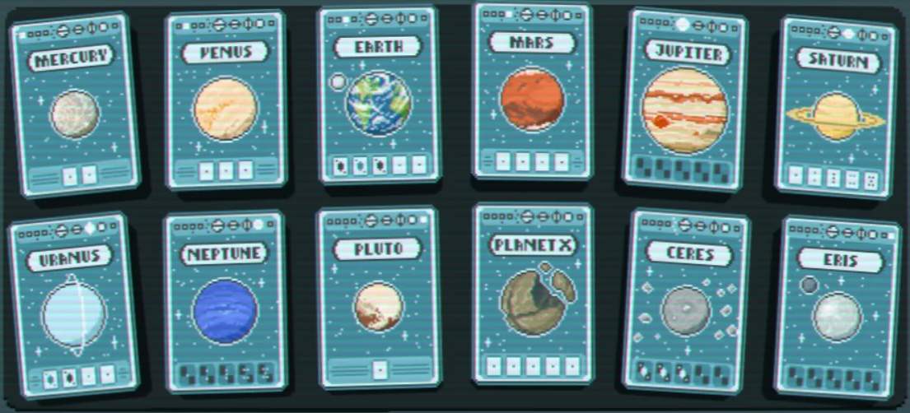

Planet cards are one of 3 consumable types in Balatro. They are used to level up
your poker hands by increasing the amount of chips and multiplier each hand it worth.
These are found in Celestial packs in the shop or by packs given by the Meteor skip tag.
There are 12 planet cards in Balatro. They are in order: Pluto, Mercury, Uranus, Venus,
Saturn, Jupiter, Earth, Mars, Nuptune, Planet X, Ceres, and lastly, Eres.

Pluto: Levels up High Card. +1 Mult and +10 Chips
Mercury: Levels up Pair. +1 Mult and +15 Chips
Uranus: Levels up Two Pair. +1 Mult and +20 Chips
Venus: Levels up Three of a Kind. +2 Mult and +20 Chips
Saturn: Levels up Straight. +3 Mult and +30 Chips
Jupiter: Levels up Flush. +2 Mult and +15 Chips
Earth: Levels up Full House. +2 Mult and +25 Chips
Mars: Levels up Four of a Kind. +3 Mult and +30 Chips
Neptune: Levels up Straight Flush. +4 Mult and +40 Chips
Planet X: Levels up Five of a Kind. +3 Mult and +35 Chips
Ceres: Levels up Flush House. +4 Mult and +40 Chips
Eres: Levels up Flush Five of a Kind. +3 Mult and +50 Chips
Now you know about Planet cards and what hands to level up in your run!